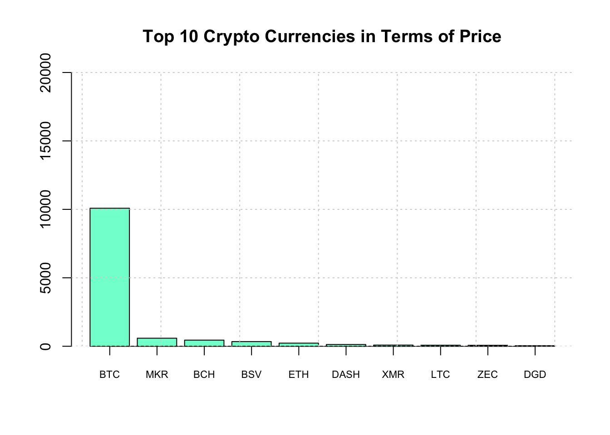
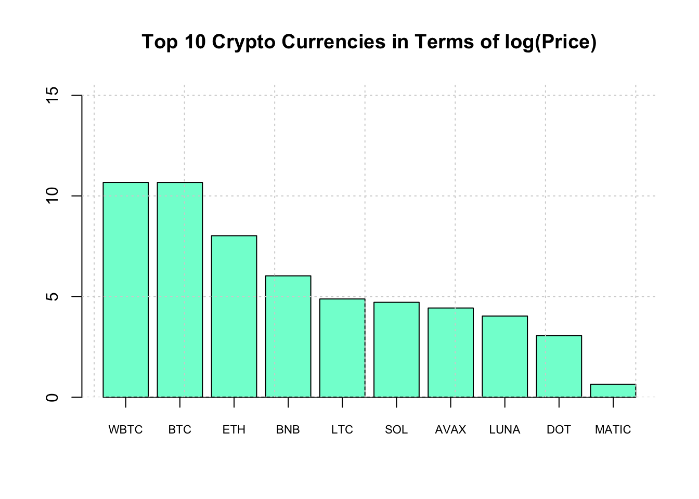

Chapter 3 More Real Life Examples
Okay. This is a tour of some sites that will serve as important examples on how to parse sites. Let’s check the price of bitcoins. You want to be rich don’t you ?
3.1 BitCoin Prices
The challenge here is that it’s all one big table and it’s not clear how to adress it. And the owners of the web site will ususally change the format or start using Javascript or HTML5 which will mess things up in the future. One solid approach I frequently use is to simply pull out all the tables and, by experimentation, try to figure out which one has the information I want. This always require some work.
library(rvest)
url <- "https://coinmarketcap.com/all/views/all/"
bc <- read_html(url)
bc_table <- bc %>%
html_nodes('table') %>%
html_table() %>% .[[3]]
# We get back a one element list that is a data frame
str(bc_table,0)## 'data.frame': 200 obs. of 11 variables: bc_table <- bc_table[,c(2:3,5)]
head(bc_table)## Name Symbol Price
## 1 Bitcoin BTC $9,827.76
## 2 Ethereum ETH $224.37
## 3 XRP XRP $0.277466
## 4 Bitcoin Cash BCH $445.57
## 5 Bitcoin SV BSV $337.31
## 6 Litecoin LTC $77.32Everything is a character at this point so we have to go in an do some surgery on the data frame to turn the Price into an actual numeric.
# The data is "dirty" and has characers in it that need cleaning
bc_table <- bc_table %>% mutate(Price=gsub("\\$","",Price))
bc_table <- bc_table %>% mutate(Price=gsub(",","",Price))
bc_table <- bc_table %>% mutate(Price=round(as.numeric(Price),2))
# There are four rows wherein the Price is missing NA
bc_table <- bc_table %>% filter(complete.cases(bc_table))
# Let's get the Crypto currencies with the Top 10 highest prices
top_10 <- bc_table %>% arrange(desc(Price)) %>% head(10)
top_10## Name Symbol Price
## 1 Bitcoin BTC 9827.76
## 2 Maker MKR 583.17
## 3 Bitcoin Cash BCH 445.57
## 4 Bitcoin SV BSV 337.31
## 5 Ethereum ETH 224.37
## 6 Dash DASH 128.07
## 7 Monero XMR 80.75
## 8 Litecoin LTC 77.32
## 9 Zcash ZEC 70.19
## 10 DigixDAO DGD 41.18Let’s make a barplot of the top 10 crypto currencies.
# Next we want to make a barplot of the Top 10
ylim=c(0,max(top_10$Price)+10000)
main="Top 10 Crypto Currencies in Terms of Price"
bp <- barplot(top_10$Price,col="aquamarine",
ylim=ylim,main=main)
axis(1, at=bp, labels=top_10$Symbol, cex.axis = 0.7)
grid()
So that didn’t work out so well since one of the crypto currencies dominates the others in terms of price. So let’s create a log transformed verion of the plot.
# Let's take the log of the price
ylim=c(0,max(log(top_10$Price))+5)
main="Top 10 Crypto Currencies in Terms of log(Price)"
bp <- barplot(log(top_10$Price),col="aquamarine",
ylim=ylim,main=main)
axis(1, at=bp, labels=top_10$Symbol, cex.axis = 0.7)
grid()
3.2 IMDB
Look at this example from IMDb (Internet Movie Database). According to Wikipedia:
IMDb (Internet Movie Database)[2] is an online database of information related to films, television programs, home videos, video games, and streaming content online – including cast, production crew and personal biographies, plot summaries, trivia, fan and critical reviews, and ratings. We can search or refer to specific movies by URL if we wanted. For example, consider the following link to the “Lego Movie”: http://www.imdb.com/title/tt1490017/
In terms of scraping information from this site we could do that using the rvest package. Let’s say that we wanted to capture the rating information which is 7.8 out of 10. We could use the xPath Tool or the Selector gadet tool to zone in on this information. According to selector gadget we have the following xpath expression:
url <- "http://www.imdb.com/title/tt1490017/"
lego_movie <- read_html(url)
# Scrape the website for the movie rating
rating <- lego_movie %>%
html_nodes(".ratingValue span") %>%
html_text() So that gives us what we need albeit in character form. Now it’s a simple matter of parsing out the first rating value:
(rating <- as.numeric(rating[1]))## [1] 7.8That wasn’t so bad. Let’s see what using the xPath plugin gives us:
We get a much longer xpath expression which should provide us with direct access to the value.
xp <- "/html/body/div[3]/div/div[2]/div[5]/div[1]/div[2]/div/div[1]/div[2]/div/div[1]/div[1]/div[1]/strong/span"
# Scrape the website for the movie rating
rating <- lego_movie %>%
html_nodes(xpath=xp) %>%
html_text() %>% as.numeric()
rating## [1] 7.8Let’s access the summary section of the link. We could use Selector Gadget or the xPath plugin. I’ll use the former.
mov_summary <- lego_movie %>%
html_nodes(".summary_text") %>%
html_text()
mov_summary## [1] "\n An ordinary LEGO construction worker, thought to be the prophesied as \"special\", is recruited to join a quest to stop an evil tyrant from gluing the LEGO universe into eternal stasis.\n "3.3 Faculty Salaries
In this example we have to parse the main table associated with the results page.
Salary

Salary
url <- "https://www.insidehighered.com/aaup-compensation-survey"
df <- read_html(url) %>% html_table() %>% `[[`(1)
intost <- c("Institution","Category","State")
salary <- df %>% separate(InstitutionCategoryState,into=intost,sep="\n")
salary## Institution Category State
## 1 Auburn University Doctoral ALABAMA
## 2 Birmingham Southern College Baccalaureate ALABAMA
## 3 Huntingdon College Baccalaureate ALABAMA
## 4 Jacksonville St U Master’s ALABAMA
## 5 Samford University Master ALABAMA
## 6 Troy University Masters ALABAMA
## 7 The University of Alabama Doctoral ALABAMA
## 8 University of Alabama at Birmingham Doctoral ALABAMA
## 9 University of Alabama Huntsville Doctoral ALABAMA
## 10 University of Montevallo Master ALABAMA
## Avg. SalaryFull Professors Avg. ChangeContinuing Full Professors
## 1 $132,600 4.4%
## 2 $81,000 0.0%
## 3 $76,700 0.0%
## 4 $77,300 N/A
## 5 $105,200 3.2%
## 6 $84,500 1.6%
## 7 $151,600 2.0%
## 8 $139,100 2.8%
## 9 $126,400 2.0%
## 10 $80,700 2.1%
## CountFull Professors Avg. Total CompensationFull Professors
## 1 407 $170,300
## 2 39 $100,000
## 3 13 $89,500
## 4 78 $104,100
## 5 130 $133,300
## 6 30 $88,500
## 7 300 $205,100
## 8 191 $164,800
## 9 64 $169,200
## 10 47 $106,100
## Salary EquityFull Professors
## 1 90.1
## 2 92.8
## 3 109.6
## 4 94.8
## 5 86.8
## 6 105.7
## 7 85.6
## 8 88.4
## 9 95.6
## 10 94.4So the default is 10 listings per page but there are many more pages we could process to get more information. If we look at the bottom of the page we can get some clues as to what the URLs are. Here we’ll just process the first two pages since it will be quick and won’t burden the server.
# So now we could process multiple pages
url <- 'https://www.insidehighered.com/aaup-compensation-survey?institution-name=&professor-category=1591&page=1'
str1 <- "https://www.insidehighered.com/aaup-compensation-survey?"
str2 <- "institution-name=&professor-category=1591&page="
intost <- c("Institution","Category","State")
salary <- data.frame()
# We'll get just the first two pages
for (ii in 1:2) {
nurl <- paste(str1,str2,ii,sep="")
df <- read_html(nurl)
tmp <- df %>% html_table() %>% `[[`(1)
tmp <- tmp %>% separate(InstitutionCategoryState,into=intost,sep="\n")
salary <- rbind(salary,tmp)
}
salaryLook at the URLs at the bottom of the main page to find beginning and ending page numbers. Visually this is easy. Programmatically we could do something like the following:
# https://www.insidehighered.com/aaup-compensation-survey?page=1
# https://www.insidehighered.com/aaup-compensation-survey?page=94
# What is the last page number ? We already know the answer - 94
lastnum <- df %>% html_nodes(xpath='//a') %>%
html_attr("href") %>% '['(103) %>%
strsplit(.,"page=") %>% '[['(1) %>% '['(2) %>% as.numeric(.)
# So now we could get all pages of the survey
str1 <- "https://www.insidehighered.com/aaup-compensation-survey?"
str2 <- "institution-name=&professor-category=1591&page="
intost <- c("Institution","Category","State")
salary <- data.frame()
for (ii in 1:lastnum) {
nurl <- paste(str1,str2,ii,sep="")
df <- read_html(nurl)
tmp <- df %>% html_table() %>% `[[`(1)
tmp <- tmp %>% separate(InstitutionCategoryState,into=intost,sep="\n")
salary <- rbind(salary,tmp)
Sys.sleep(1)
}
names(salary) <- c("Institution","Category","State","AvgSalFP","AvgChgFP",
"CntFP","AvgTotCompFP","SalEquityFP")
salary <- salary %>%
mutate(AvgSalFP=as.numeric(gsub("\\$|,","",salary$AvgSalFP))) %>%
mutate(AvgTotCompFP=as.numeric(gsub("\\$|,","",salary$AvgTotCompFP)))
salary %>% group_by(State,Category) %>%
summarize(avg=mean(AvgSalFP)) %>%
arrange(desc(avg))There are some problems:
- Data is large and scattered across multiple pages
- We could use above techniques to move from page to page
- There is a form we could use to narrow criteria
- But we have to programmatically submit the form
- rvest (and other packages) let you do this
3.4 Filling Out Forms From a Program
Salary
Let’s find salaries between $ 150,000 and the default max ($ 244,000)
- Find the element name associated with “Average Salary”
- Establish a connection with the form (usually the url of the page)
- Get a local copy of the form
- Fill in the value for the “Average Salary”
- Submit the lled in form
- Get the results and parse them like above `
So finding the correct element is more challenging. I use Chrome to do this. Just highlight the area over the form and right click to “Insepct” the element. This opens up the developer tools. You have to dig down to find the corrext form and the element name. Here is a screen shot of my activity:
Salary
url <- "https://www.insidehighered.com/aaup-compensation-survey"
# Establish a session
mysess <- html_session(url)
# Get the form
form_unfilled <- mysess %>% html_node("form") %>% html_form()
form_filled <- form_unfilled %>% set_values("range-from"=150000)
# Submit form
results <- submit_form(mysess,form_filled)
first_page <- results %>% html_nodes(xpath=expr) %>% html_table()
first_page3.5 PubMed
Pubmed provides a rich source of information on published scientific literature. There are tutorials on how to leverage its capabilities but one thing to consider is that MESH terms are a good starting place since the search is index-based. MeSH (Medical Subject Headings) is the NLM controlled vocabulary thesaurus used for indexing articles for PubMed. It’s faster and more accurate so you can first use the MESH browser to generate the appropriate search terms and add that into the Search interface. The MESH browser can be found at https://www.ncbi.nlm.nih.gov/mesh/

What we do here is get the links associated with each publication so we can then process each of those and get the abstract associated with each publication.
# "hemodialysis, home" [MeSH Terms]
url<-"https://www.ncbi.nlm.nih.gov/pubmed/?term=%22hemodialysis%2C+home%22+%5BMeSH+Terms%5D"
#
# The results from the search will be of the form:
# https://www.ncbi.nlm.nih.gov/pubmed/30380542
results <- read_html(url) %>%
html_nodes("a") %>%
html_attr("href") %>%
grep("/pubmed/[0-9]{1,6}",.,value=TRUE) %>% unique(.)
results## [1] "/pubmed/31566344" "/pubmed/31556520" "/pubmed/31448033"
## [4] "/pubmed/31320319" "/pubmed/31009189" "/pubmed/30964936"
## [7] "/pubmed/30799978" "/pubmed/30760251" "/pubmed/30663973"
## [10] "/pubmed/30545707" "/pubmed/30480534" "/pubmed/30473061"
## [13] "/pubmed/30463079" "/pubmed/30457224" "/pubmed/30392981"
## [16] "/pubmed/30380542" "/pubmed/30352485" "/pubmed/30314451"
## [19] "/pubmed/30281539" "/pubmed/30235331"So now we could loop through these links and get the abstracts for these results. It looks that there are approximately 20 results per page. As before we would have to dive in to the underlying structure of the page to get the correct HTML pathnames or we could just look for Paragraph elements and pick out the links that way.
text.vec <- vector()
for (ii in 1:length(results)) {
string <- paste0("https://www.ncbi.nlm.nih.gov",results[ii])
text.vec[ii] <- read_html(string) %>% html_nodes("p") %>% `[[`(11) %>% html_text()
}
# Eliminate lines with newlines characters
final.vec <- text.vec[grep("^\n",text.vec,invert=TRUE)]
final.vec## [1] "Globally, home dialysis prevalence has been declining relative to the increase in end stage renal disease and renal replacement therapy. The goal of this study was to identify international perceptions and practices. A web-based questionnaire was disseminated to nephrology nurses in 30 home dialysis-prevalent nations. Global telehealth use was low (23%), contrasting with 83% respondents agreeing telehealth would improve care. Only 31% of all programs enabled patient training outside of normal working hours (e.g., nights and weekends), and 31% of all program patients had some cost reimbursement, with a significant difference between U.S. and non-U.S. programs (U.S. 11%, non-U.S. 59%, 2 = 93.6, p < 0.0001). Significant differences in the need for monthly clinic visits (U.S. 72%, non-US 44%, 2 = 83.7, p < 0.0001) were also found. Telehealth provision and patient training flexibility is limited, and patient cost reimbursement is low. Increased telehealth, patient cost reimbursement, and flexible training models may promote home dialysis growth."
## [2] "The authors report the first case of successful peritoneal dialysis (PD) in a developing country performed about a 13-year-old adolescent followed-up for stage V chronic kidney disease (CKD) with anuria. After 3 months of hemodialysis, the parents opted for continuous ambulatory peritoneal dialysis (CAPD) as they wished to return home located 121km from Dakar. After PD catheter insertion, the plan proposed to the patient consisted 3-4 hours stasis of isotonic dialysate during the day and a night stasis of 8 hours of icodextrin for an injection volume of 1L per session. The patient and his mother were trained and assessed on the PD technique. After dialysis adequacy was tested while hospitalised, they were able to return home and continued the sessions following the same plan prescribed and while keeping in touch, by telephone, with the medical team. The technique assessment at the day hospital every 2 weeks revealed dialysis adequacy and satisfactory tolerance of PD at home after 04 months of observation. It was the first case of successful CAPD in the pediatrics unit in this context. Scaling this technique is a challenge for the pediatric nephrologist in developing countries like Senegal."
## [3] "dialysis; ethnicity; hemodialysis; hemodialysis, home; public policy"
## [4] "This article describes one woman's journey to home hemodialysis therapy. Her training and trials in adjusting to the therapy led to a passion for promoting improvements in dialysis for herself and others. Ms. Gedney has become a patient advocate who travels the country speaking for home dialyzers to politicians, physicians, and an alphabet soup of renal care committees. Her example should inspire others in the renal care community to speak out to make a difference for positive change."
## [5] "Improvement in Home Dialysis (HoD) utilizations as a mean to improve the patient reported and health services outcomes, has been a long-held goal of the providers and healthcare system in United States. However, measures to improve HoD rates have yielded limited success so far. Lack of patient awareness of chronic kidney disease (CKD) and its management options, is one of the important barriers against patient adoption of HoD. Despite ample evidence that Comprehensive pre-ESERD Patient Education (CPE) improves patient awareness and informed HoD choice, use of CPE among US advanced CKD patients is low. Need for significant resources, lack of validated data showing unequivocal and reproducible benefits, and the lack of validated CPE protocols proven to have consistent efficacy in improving not only patient awareness but also HoD rates in US population, are major limitations deterring adoption of CPE in routine clinical practice. We recently demonstrated that if a structured, protocol based CPE is integrated within the routine nephrology care for patients with advanced CKD, it substantially improves informed HoD choice and utilizations. However, this requires establishing CPE resources within each nephrology practice. Efficacy of a stand-alone CPE model, independent of clinical care, has not been examined till date. In this report we report the efficacy of our structured CPE protocol, delivered outside the realm of routine nephrology care-as a stand-alone patient education program, in a geographically distant region, and show that: when provided opportunity for informed dialysis choice, a majority of advanced CKD patients in US would prefer HoD. We also show that initiating CPE leads to accelerated growth in HoD utilizations and reduces disparities in HoD utilizations, goals for system improvements. Finally, the reproducibility of our structured CPE protocol with consistent efficacy data suggest that initiating such programs at institutional levels has the potential to improve informed dialysis selection and HoD rates across any similar large healthcare institute within US."
## [6] "A growing number of dialysis patients is treated with home haemodialysis. Our current pre-analytical protocols require patients to centrifuge the blood sample and transfer the plasma into a new tube at home. This procedure is prone to errors and precludes accurate bicarbonate measurement, required for determining dialysate bicarbonate concentration and maintaining acid-base status. We therefore evaluated whether cooled overnight storage of gel separated plasma is an acceptable alternative."
## [7] "The survival rate for dialysis patients is poor. Previous studies have shown improved survival with home hemodialysis (HHD), but this could be due to patient selection, since HHD patients tend to be younger and healthier. The aim of the present study is to analyse the long-term effects of HHD on patient survival and on subsequent renal transplantation, compared with institutional hemodialysis (IHD) and peritoneal dialysis (PD), taking age and comorbidity into account."
## [8] "Intensive hemodialysis is associated with more frequent arteriovenous (AV) access complications. We performed a retrospective cohort study to ascertain potential risk factors associated with access dysfunction in a cohort of nocturnal home hemodialysis (HHD) patients."
## [9] "Home dialysis therapy, including home hemodialysis and peritoneal dialysis, is underused as a modality for the treatment of chronic kidney failure. The National Kidney Foundation-Kidney Disease Outcomes Quality Initiative sponsored a home dialysis conference in late 2017 that was designed to identify the barriers to starting and maintaining patients on home dialysis therapy. Clinical, operational, policy, and societal barriers were identified that need to be overcome to ensure that dialysis patients have the freedom to choose their treatment modality. Education of patients and patient partners, as well as health care providers, about home dialysis therapy, if offered at all, is often provided in a cursory manner. Lack of exposure to home dialysis therapies perpetuates a lack of familiarity and thus a hesitancy to refer patients to home dialysis therapies. Patient and care partner support, both psychosocial and financial, is also critical to minimize the risk for burnout leading to dropout from a home dialysis modality. Thus, the facilitation of home dialysis therapy will require a systematic change in chronic kidney disease education and the approach to dialysis therapy initiation, the creation of additional incentives for performing home dialysis, and breakthroughs to simplify the performance of home dialysis modalities. The home dialysis work group plans to develop strategies to overcome these barriers to home dialysis therapy, which will be presented at a follow-up home dialysis conference."
## [10] "Telehealth encompasses a broad variety of technologies and tactics to deliver virtual medical, health, and education services. Telemedicine is the use of electronic communications for the exchange of medical information from one site to another to improve a patient's clinical health status.Several studies show that, by providing better patient oversight and communication, telehealth in PD enhances patient care, outcomes, quality of care, and satisfaction. Associated benefits include increased patient retention to home dialysis, reduced use of hospital services, and reduced costs of care.The sustainability of telehealth had been limited by reimbursement and regulatory restrictions. The Centers for Medicare and Medicaid Services (CMS) limited services related to end-stage renal disease by providing reimbursement for telehealth only in rural areas or counties outside of a metropolitan statistical area. Moreover, the dialysis facility and the patient's home were not approved as originating sites. However, effective January 1, 2019, those restrictions will be lifted. Telehealth will require that home dialysis patients be established with 3 initial face-to-face monthly clinical assessments without the use of telehealth; after those initial 3 months, a face-to-face visit at least once every 3 consecutive months will be required. Claims can be submitted using designated Current Procedural Terminology codes and modifiers.The actual extension of telehealth to home dialysis patients will depend on the details of forthcoming CMS regulations."
## [11] "Since a couple of years, a new paradigm of care has taken place where the patient plays a major role in the choice of his treatment. Patient information in a context where the doctor-patient relationship has drastically changed and where knowledge is continuously growing, is a challenge for the nephrologist. For the patient who decides to undergo home dialysis, numerous questions arise during the decision-making process. How should treatment alternatives be discussed with the patient? What are the current data available on the different methods? As comfort, quality of life and level of autonomy often drive the choice of care management, home dialysis can be promoted more with appropriate assistance from both the nephrologist and the healthcare team. Cet article fait partie du numéro supplément Innovations en Néphrologie réalisé avec le soutien institutionnel de Vifor Fresenius Medical Care Renal Pharma."
## [12] "Patients on peritoneal dialysis (PD) can be assisted by a nurse or a family member and treated either by automated PD (APD) or continuous ambulatory PD (CAPD). The aim of this study was to evaluate the effect of PD modality and type of assistance on the risk of transfer to haemodialysis (HD) and on the peritonitis risk in assisted PD patients."
## [13] "Hemodialysis for chronic renal failure was introduced and developed in Seattle, WA, in the 1960s. Using Kiil dialyzers, weekly dialysis time and frequency were established to be about 30 hours on 3 time weekly dialysis. This dialysis time and frequency was associated with 10% yearly mortality in the United States in 1970s. Later in 1970s, newer and more efficient dialyzers were developed and it was felt that dialysis time could be shortened. An additional incentive to shorten dialysis was felt to be lower cost and higher convenience. Additional support for shortening dialysis time was provided by a randomized prospective trial performed by National Cooperative Dialysis Study (NCDS). This study committed a Type II statistical error rejecting the time of dialysis as an important factor in determining the quality of dialysis. This study also provided the basis for the establishment of the Kt/Vurea index as a measure of dialysis adequacy. This index having been established in a sacrosanct randomized controlled trial (RCT), was readily accepted by the HD community, and led to shorter dialysis, and higher mortality in the United States. Kt/Vurea is a poor measure of dialysis quality because it combines three unrelated variables into a single formula. These variables influence the clinical status of the patient independent of each other. It is impossible to compensate short dialysis duration (t) with the increased clearance of urea (K), because the tolerance of ultrafiltration depends on the plasma-refilling rate, which has nothing in common with urea clearance. Later, another RCT (the HEMO study) committed a Type III statistical error by asking the wrong research question, thus not yielding any valuable results. Fortunately, it did not lead to deterioration of dialysis outcomes in the United States. The third RCT in this field (\"in-center hemodialysis 6 times per week versus 3 times per week\") did not bring forth any valuable results, but at least confirmed what was already known. The fourth such trial (\"The effects of frequent nocturnal home hemodialysis\") too did not show any positive results primarily due to significant subject recruitment issues leading to inappropriate selection of patients. Comparison of the value of peritoneal dialysis and HD in RCTs could not be completed because of recruitment problems. Randomized controlled trials have therefore failed to yield any meaningful information in the area of dose and or frequency of hemodialysis."
## [14] "Increasing uptake of home hemodialysis (HD) has led to interest in characteristics that predict discontinuation of home HD therapy for reasons other than death or transplantation. Recent reports of practice pattern variability led to the hypothesis that there are patient- and center-specific factors that influence these discontinuations."
## [15] "Assisted PD (assPD) is an option of home dialysis treatment for dependent end-stage renal patients and worldwide applied in different countries since more than 40 years. China and Germany shares similar trends in demographic development with a growing proportion of elderly referred to dialysis treatment. So far number of patients treated by assPD is low in both countries. We analyze experiences in the implementation process, barriers, and benefits of ass PD in the aging population to provide a model for sustainable home dialysis treatment with PD in both countries. Differences and similarities of different factors (industrial, patient and facility based) which affect utilization of assPD are discussed. AssPD should be promoted in China and Germany to realize the benefits of home dialysis for the aging population by providing a structured model of implementation and quality assurance."
## [16] "The prevalence of end-stage renal disease continues to increase in the United States with commensurate need for renal replacement therapies. Hemodialysis continues to be the predominant modality, though less than 2% of these patients will receive hemodialysis in their own home. While home modalities utilizing peritoneal dialysis have been growing, home hemodialysis (HHD) remains underutilized despite studies showing regression in left ventricular mass, improved quality of life, reduced depressive symptoms, and decreased postdialysis recovery time. To increase penetration of HHD will require a proactive approach from both physicians and dialysis networks to address barriers both in the system and on the level of the patients and families. We are reviewing these issues with a focus on the state of Mississippi."
## [17] "Utilization of home hemodialysis (HHD) is low in Europe. The Knowledge to Improve Home Dialysis Network in Europe (KIHDNEy) is a multi-center study of HHD patients who have used a transportable hemodialysis machine that employs a low volume of lactate-buffered, ultrapure dialysate per session. In this retrospective cohort analysis, we describe patient factors, HHD prescription factors, and biochemistry and medication use during the first 6 months of HHD and rates of clinical outcomes thereafter."
## [18] "There is increasing evidence that extended-hours regimens are associated with improved outcomes for patients on maintenance hemodialysis programs. Home hemodialysis programs are a well established way for patients to benefit from extended-hours dialysis overnight; however, there are significant barriers to home hemodialysis, which means that for many this is not an option. In center, nocturnal hemodialysis is an increasingly recognized way of offering extended-hours treatment to patients unable to undertake home-based programs and is an underutilized modality for such patients to gain from the physiological benefits of extended-hours dialysis regimens."
## [19] "Health-related quality of life (HRQOL) is an important outcome measure in patients with end-stage renal disease. HRQOL is assumed to improve with kidney transplantation and also with nocturnal hemodialysis compared to conventional hemodialysis. However, there is no evidence regarding HRQOL to support the optimal treatment choice for patients on nocturnal hemodialysis who hesitate opting for transplantation. We therefore compared HRQOL between patients who were treated with kidney transplantation or nocturnal hemodialysis for one year."Well that was tedious. And we processed only the first page of results. How do we “progrmmatically” hit the “Next” Button at the bottom of the page ? This is complicated by the fact that there appears to be some Javascript at work that we would have to somehow interact with to get the URL for the next page. Unlike with the school salary example it isn’t obvious how to do this. If we hove over the “Next” button we don’t get an associated link.